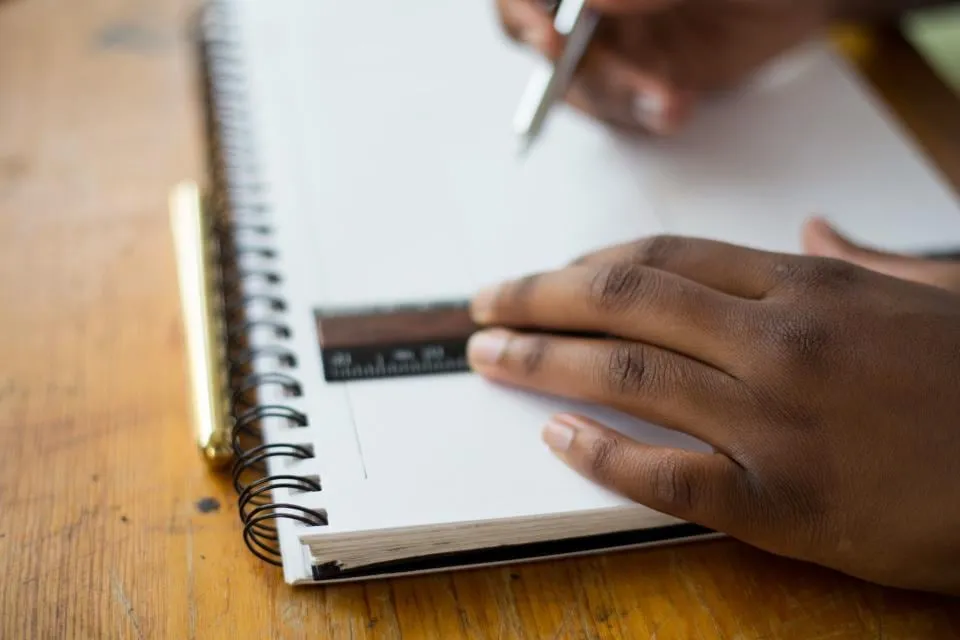

Mon accompagnement
Un entraînementpour la tête.
Le mental se prépare, se travaille et s’entraîne, comme le physique ou la technique. L’objectif : rester lucide et calme le jour J, au moment où cela fait la différence.

Comment ça marche ?
Un cadre simple,du premier appel à l’autonomie.
Pas de méthode toute faite : un chemin clair, en quatre temps, que nous adaptons ensemble à votre situation.
- 01
Échanger
Un premier appel, sans engagement, pour comprendre votre situation et vos attentes.
- 02
Identifier
Nous définissons ensemble ce qui se joue pour vous et les objectifs à atteindre.
- 03
Travailler
Des outils concrets, choisis selon votre fonctionnement et testés en séance.
- 04
Intégrer
Vous les appliquez en autonomie, avec un rendez-vous de suivi entre chaque séance pour débriefer.
Boîte à outils
Des outils concrets,choisis avec vous.
Respiration
Ralentir, se recentrer et retrouver un état plus stable en quelques cycles.
Visualisation mentale
Préparer une situation en l’imaginant avec précision : une façon de s’entraîner en dehors du terrain.
Routines
Un cadre familier avant l’épreuve, pour réduire le stress et les pensées parasites.
Dialogue interne
Repérer les pensées qui freinent et choisir des mots qui aident.
Ancrage
Associer un geste ou un mot à un état ressource — calme, énergie — pour le retrouver au bon moment.
Objectifs
Définir des objectifs clairs, atteignables, qui dépendent de vous.
Informations pratiques
Simple et accessible.
- Durée
- Une séance dure 1 heure.
- Présentiel ou visio
- En déplacement en Occitanie (Toulouse, Montpellier, Castres, Font-Romeu, Narbonne) ou en visio, partout en France.
- Suivi
- Un rendez-vous de suivi est calé entre chaque séance, par téléphone ou en visio, pour débriefer.
- Confidentialité
- Les échanges se déroulent dans un cadre bienveillant, respectueux et confidentiel.
- Prise de rendez-vous
- Réservation en ligne, selon vos disponibilités, ou par téléphone.
La préparation mentale ne remplace pas un suivi médical ou psychologique. En cas de souffrance importante, un professionnel de santé (médecin, psychologue) sera l’interlocuteur adapté.
Questions fréquentes
Vos questions, simplement.
Une autre question ? Le plus simple est d’en parler de vive voix.
06 22 06 44 59Du lundi au vendredi, 9 h – 12 h et 14 h – 18 h. Ou via la page contact.
Nous partons de votre situation pour comprendre ce qui se joue et mettre en place des outils concrets, adaptés à votre fonctionnement.
Une séance dure 1 heure. Vous repartez avec un travail à expérimenter, et nous faisons le point lors d’un rendez-vous de suivi, par téléphone ou en visio, avant la séance suivante.
Sportif amateur ou confirmé, sportif blessé, collégien, lycéen, étudiant, entraîneur, éducateur ou arbitre : il n’est pas nécessaire d’être en difficulté ni d’avoir un haut niveau pour commencer.
Parfois dès la première séance, lorsqu’un outil ciblé répond à une situation précise. Un accompagnement sur plusieurs séances permet ensuite d’ancrer les changements. Chaque parcours est différent : aucun résultat ne peut être garanti à l’avance.
Les deux. En présentiel, je me déplace en Occitanie — Toulouse, Montpellier, Castres, Font-Romeu, Narbonne — depuis l’Aude ; à distance, les séances se déroulent en visio, partout en France.

Et si vous faisiez la différence dans les moments-clés ?
En Occitanie ou en visio, partout en France. Un premier échange, sans engagement, pour faire le point.